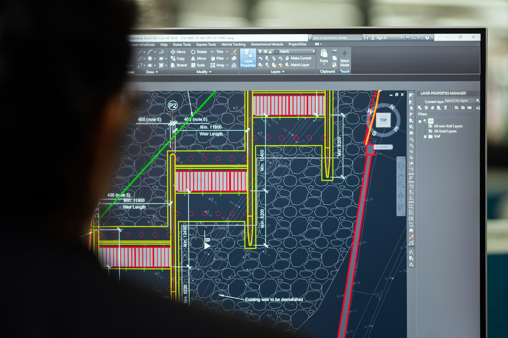

01
Mantenimiento industrial
Diagnóstico e intervenciones para acompañar la continuidad de infraestructura y operaciones.
Mantenimiento, instalaciones, construcción y servicios especializados. Una identidad propia para el trabajo que mantiene a la industria en movimiento.
Servicios Smart complementa el desarrollo industrial de MCA con una propuesta centrada en la operación: montaje, mantenimiento, instalaciones eléctricas y electromecánicas, construcción y soluciones técnicas para empresas.
Solicitar evaluación de servicio ↗Seis líneas de soluciones para instalaciones industriales y comerciales. Los alcances específicos se definen junto con cada empresa.
Diagnóstico e intervenciones para acompañar la continuidad de infraestructura y operaciones.
Obras e instalaciones de sistemas eléctricos y electromecánicos para empresas.
Ejecución constructiva e integración de instalaciones y componentes industriales.
Atención técnica orientada a necesidades particulares de instalaciones.
Seguimiento, coordinación y supervisión de trabajos técnicos y proyectos.
Intervenciones para instalaciones productivas, logísticas y comerciales.
MCA organiza proyectos, ingeniería e inversiones. Servicios Smart actúa sobre instalaciones, sistemas, montajes y necesidades de continuidad operativa. Una combinación comercial coherente, con identidades diferenciadas.
Contactar Servicios Smart
SMART / OPERATIONS & TECHNICAL SERVICESSecuencia de servicio propuesta para el sitio, sujeta a validación del procedimiento comercial y técnico de Smart.
Comprender la instalación, el contexto y la necesidad operativa.
Definir alcance, recursos, metodología y programación.
Coordinar y ejecutar los trabajos técnicos acordados.
Cierre, recomendaciones y próximas necesidades de operación.
Desarrollo de parques, planificación industrial, ingeniería y gerenciamiento de proyectos.
Instalaciones, mantenimiento, construcción, supervisión y servicios técnicos especializados.
Contanos las características de tus instalaciones o el tipo de trabajo que necesitás resolver.
Solicitar propuesta técnica